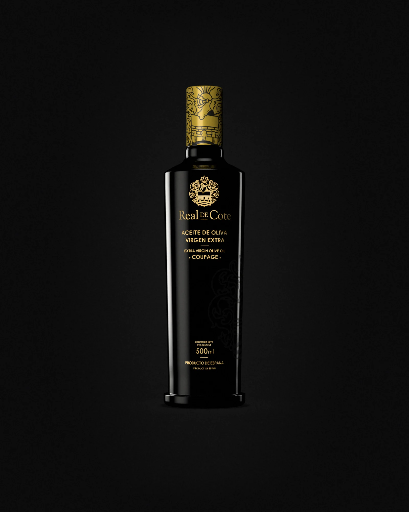

6 señales que puedes comprobar en casa, sin ser catador.
Debe poner «aceite de oliva virgen extra», no «aceite de oliva» a secas. Busca también la campaña de cosecha y el origen.
La luz estropea el aceite. Una botella oscura o una lata lo protegen; una transparente expuesta en un estante, no tanto.
Un buen virgen extra huele a fruta fresca: aceituna verde, hierba recién cortada, tomate, almendra.
Mala señal: olor a rancio, humedad o grasa vieja.
Un toque de amargor y un picor en la garganta que te hace toser un poco son buena señal: indican frescura y presencia de polifenoles.
No es un defecto. Es carácter.
Cosechar a tiempo y extraer en frío con cuidado cuesta. Si un litro cuesta menos que un café, algo se ha quedado por el camino.
Lejos de la luz y del calor, bien cerrado. Un buen aceite se echa a perder en una encimera junto a los fogones.
Cinco aceites. Una sola casa.
Sin filtrar. Montellano, Sevilla.
realdecote.es · @realdecote
Guárdalo y compártelo con quien siga comprando por el precio.